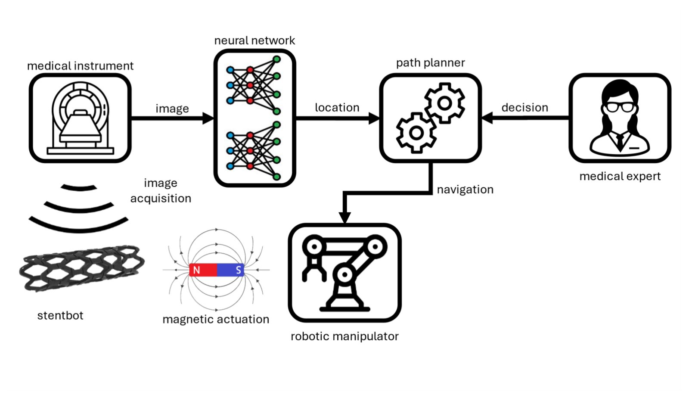
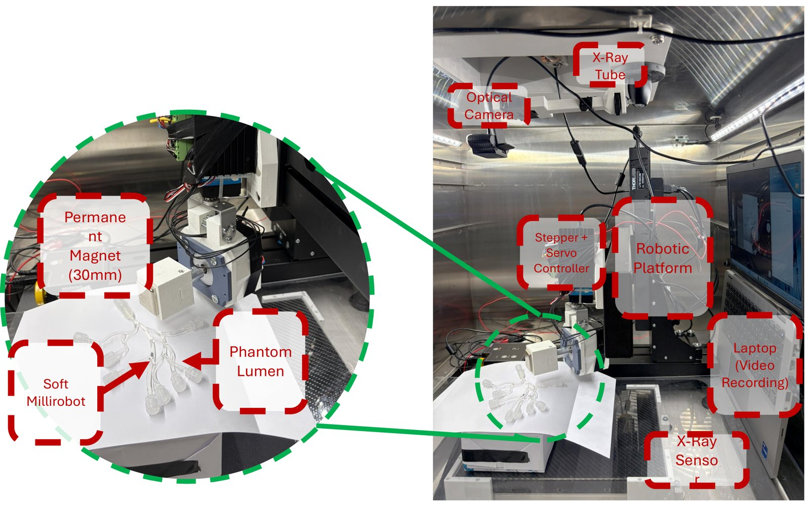
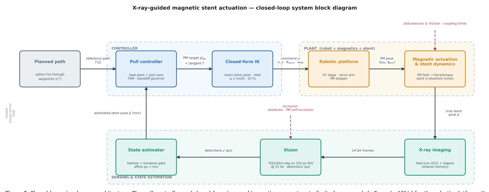
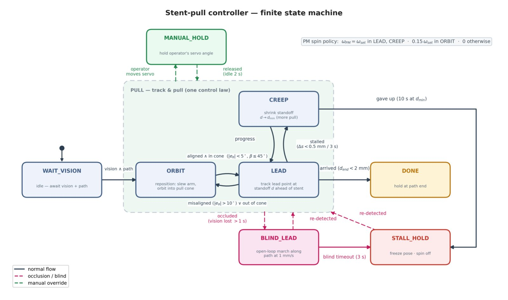

M.Sc. project · Medical Robotics Laboratory, Koç University
Image-Guided Small-Scale Magnetic Robot Navigation Under X-Ray
An autonomous platform, built end to end inside a cabinet X-ray system, that uses the live X-ray image as its feedback signal to steer a soft magnetic millirobot through a phantom lumen with a permanent magnet.
The platform in operation. Watch on YouTube.
The problem
Most small-scale robots are developed and controlled under an optical microscope. That works on the bench, but it does not translate to the body: tissue is opaque. In clinical interventions, the imaging that is actually used to see inside a patient in real time is X-ray fluoroscopy.
Controlling a robot under X-ray is harder than under a camera. The frames are low-contrast and noisy, the robot is a small, faint target, and it can be occluded. X-ray-guided control has been demonstrated before; I set out to build an automated, reproducible closed-loop implementation, where imaging, perception, state estimation, planning and actuation run as one autonomous workflow.
The system
The system estimates the position and orientation of the magnetic robot in the X-ray image, turns that estimate into a target in the physical workspace, and commands the motion hardware in a stable, rate-limited way.


Perception. The robot is found in each frame by a neural-network detector from our group's prior work on synthetic X-ray data (C. Wang et al., Nature Machine Intelligence, 2026). I adapted it and integrated it into the real-time loop; the detector itself is not my contribution, making it work as the sensor of a live control system is.
Closing the loop
A pull controller and closed-form inverse kinematics turn the planned path into rate-limited commands for the robotic platform. X-ray imaging, segmentation and Kalman state estimation close the loop.

Why a state machine instead of PID
PID was the first approach we considered. It fell short for two reasons. The platform is driven by stepper motors commanded over USB, so actuation is delayed and discrete, and continuous feedback became unreliable. And under X-ray the robot can be occluded or stall, which a single feedback law does not handle.
So I matched the control structure to the system. Autonomous operation is organized as a finite-state machine with dedicated states for real-time navigation, occlusion removal and stall recovery. It sends small, rate-limited position steps, prevents contradictory commands, and keeps going when perception drops out or progress stalls. This gave stable, precise navigation.

What I built
Apart from the perception network, which comes from our group's prior work, I designed and built the platform, from the motors to the control software, working with my co-authors and under Prof. Sitti's supervision.
- Robotic platformMotorized stages, with a stepper and a servo positioning the permanent magnet, integrated inside the cabinet X-ray system.
- Live image captureFrames taken from the X-ray unit and streamed into the control loop as the feedback signal.
- Calibration and state estimationMapping detections to the workspace and filtering them into a stable estimate of the robot's pose.
- Planning and controlThe path follower, inverse kinematics and the state-machine controller.
- Real-time softwareThe glue that ties capture, detection, estimation and actuation into one automated loop.
What's next
I am extending this work into a first-author journal manuscript.